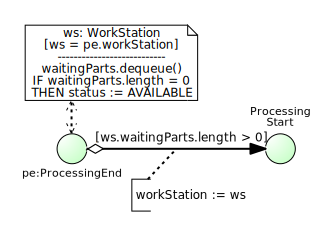

2.2. Modeling a Manufacturing Workstation as a Queueing System
A manufacturing workstation receives parts and stores them in its input buffer for processing them successively.
Conceptual Model
A conceptual information model of a workstation system, defining two object types and four event types, is shown in Figure 2-1.

As expressed by the associations between the four event types and the two object types, for all four types of events, there are the same two types of objects participating in them: parts and workstations, implying that each event of these four types involves a specific part and a specific workstation.
Notice that the input buffer (filled with waiting parts) is modeled as an association end with name waiting parts at the parts side of the association between parts and workstations, expressing the fact that at any point in time, a workstation has zero or more parts waiting in its input buffer for being processed.
A conceptual process model of this system, describing four causal regularities in the form of event rules, one for each type of event, is shown in Figure 2-2 in the form of a BPMN Process Diagram using Event circles connected with Sequence Flow arrows expressing (conditional) causation, and Data Objects attached to Event circles.

The four event rules described by this model are
- When a part arrives, it is added to the input buffer and, if the workstation is available, there will be a processing start event for processing the newly arrived part.
- When a processing start event occurs, the next part from the input buffer is being processed and a processing end event is caused to occur some time later (after the processing time has elapsed).
- When a processing end event occurs, this will cause a part departure event and, if the input buffer is not empty, another processing start event involving the next part from the buffer.
- When a part departure event occurs, the processed part will be removed from the workstation.
Design Model
A simulation design model is based on a conceptual model. Depending on the purposes/goals of a simulation study, it may abstract away from certain elements of the real-world domain described by the conceptual model, and it adds computational elements representing design decisions, such as random variables expressed int he form of random variate sampling functions based on specific probability distributions for modeling the random variation of certain system variables.
An information design model of the single workstation system described above is shown in Figure 2-3. This model defines the multi-valued waitingParts association end to be ordered, which means that it corresponds to a multi-valued reference property holding an ordered collection (such as an array list or a queue) as its value.
The information design model of Figure 2-3 defines that a PartArrival event must reference both a Part and a WorkStation, representing situations where specific parts arrive at specific workstations. Notice that, computationally, this model requires creating new Part objects (or retrieving them from an object pool) before a new PartArrival event is created (or scheduled), while it is more common in simulation models to create a new Part object only when an arrival event has occurred, which can be modeled by defining a multiplicity of 0..1 for the Part end of the PartArrival-Part association (with the meaning that PartArrival has an optional, instead of a mandatory, reference property with name part).

Notice that the model defines two class level operations (designated with the stereotype «rv») implementing random variate sampling functions: PartArrival::recurrence() complies with a triangular probability distribution with minimum, mode and maximum parameter values 3, 4 and 8, while ProcessingStart::processingTime() complies with an exponential distribution with a mean of 6.
A process design model based on the object and event types defined by the information design model of Figure 2-3 and derived from the conceptual process model of Figure 2-2 is shown in Figure 2-4.

Notice that, since all events happen at the same workstation, all three event scheduling arrows are annotated with the same event property assignment workStation := ws, which simply propagates the object reference to the given workstation along the event scheduling chain. Such property propagation assignments (in event property assignment annotations), where a property value of a follow-up event is set to the corresponding property value of the scheduling (or triggering) event, will be omitted (as implied by event types having the same property names) for avoiding to clutter the process model diagrams.
A DPMN Process Diagram, like the one shown in Figure 2-4, can be split up into a set of event rule diagrams, one for each of its Event circles, as shown in the following table. This reduction of a DPMN process design model to a set of event rule design models, together with the operational semantics of event rules presented in (Wagner 2017a), provides the semantics of DPMN Process Diagrams.
Notice that an event rule design model can also be expressed textually in the form of a pseudo-code block with four parts: part 1 indicates the triggering event type and declares a rule variable representing the triggering event, part 2 declares further rule variables and initializes them, part 3 contains a state change script consisting of state change statements, and part 4 schedules follow-up events.
| Rule design model | Pseudo-code | ||||
|---|---|---|---|---|---|
 |
| ||||
 |
| ||||
|  |
|